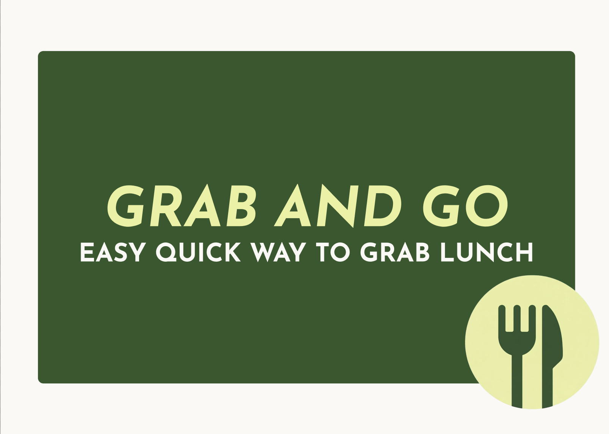
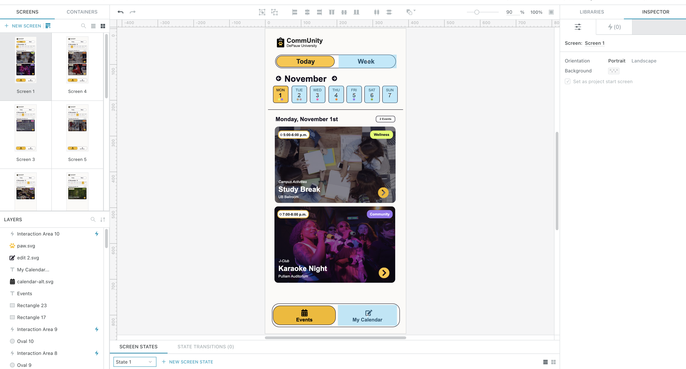

View Grab & GoWeb Experience
Grab & Go
A quick and easy-to-use website for ordering a fast lunch. This was my first UI/UX project, where I applied Figma and foundational user experience principles.
Designing experiences that satisfy user needs and business goals.

View Grab & GoWeb Experience
A quick and easy-to-use website for ordering a fast lunch. This was my first UI/UX project, where I applied Figma and foundational user experience principles.
E-commerce Redesign
A complete redesign created to improve navigation, product discovery, and the overall shopping experience through usability-focused decisions.

View CommUnityMobile App
A responsive mobile app concept for a community engagement platform, designed around clear navigation and meaningful member interaction.